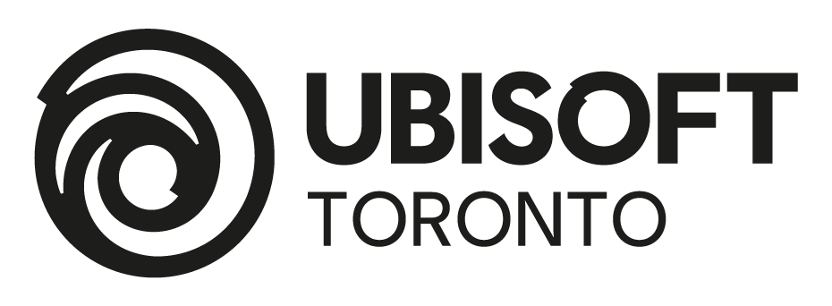
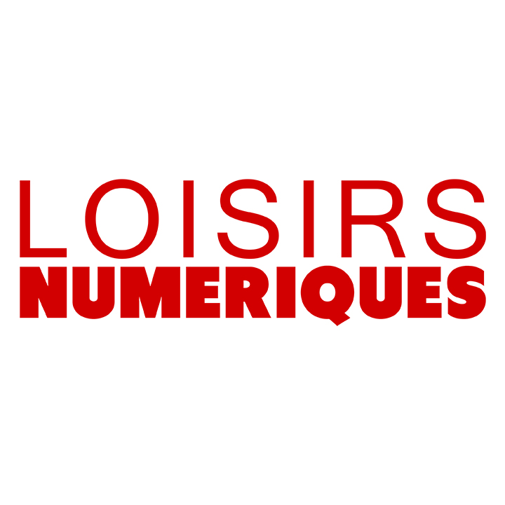
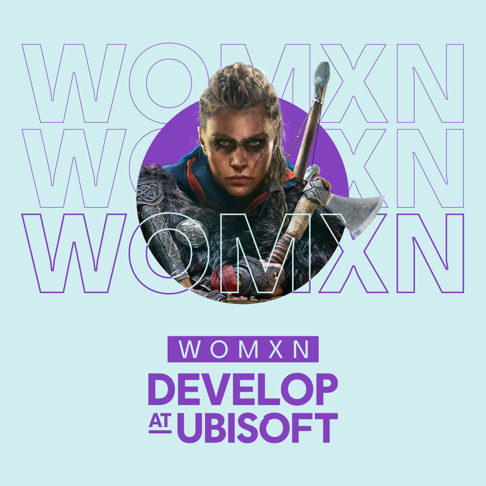

Ubisoft est à ce jour encore dirigée par la famille Guillemot, son PDG est Yves Guillemot.
La directrice générale actuelle d'Ubisoft France est Bénédicte Germain.
Ubisoft possède aujourd'hui une forte renommée internationale et dispose de nombreuses filiales à travers le monde.
Parmi elles, nous pouvons notamment trouver plusieurs sociétés du même nom dans différentes villes du monde (Ubisoft Toronto, Ubisoft São Paulo).

Au cours de ces dernières années, Ubisoft a également renforcé son
influence sur le marché du jeu vidéo avec le rachat de plusieurs studios
indépendants tels que Nadeo, RedLynx, etc....
Consciente de l’importance de disposer d’employés épanouis dans leur
travail, la direction d’Ubisoft compte essayer de mettre en place dans les années à
venir un système de travail nommé “Travaillez où vous voulez”. Ce projet consistera
à proposer aux employés quatre semaines au cours de l’année durant lesquelles les
employés pourront travailler où ils le souhaitent.
Pour que leurs employés soient les plus renseignés possible sur les dernières technologies,
l'entreprise propose de nombreuses formations continues et également des formations en interne.
Leur partenariat avec l'association Loisirs numériques leur permet de financer des
jeunes étudiants à l'aide d'une bourse pour qu'ils se forment aux métiers du jeu
vidéo et puissent potentiellement être embauchés par Ubisoft par la suite.

Enfin, Ubisoft finance également un projet du nom de "WomXn Develop at Ubisoft" qui permet
aux femmes et personnes non binaires d'accéder à un mentorat spécialisé en programmation et
en game design. Des professionnels encadrent le projet, ce qui donne également la possibilité
aux participants de se construire un réseau dans le milieu du jeu vidéo.
